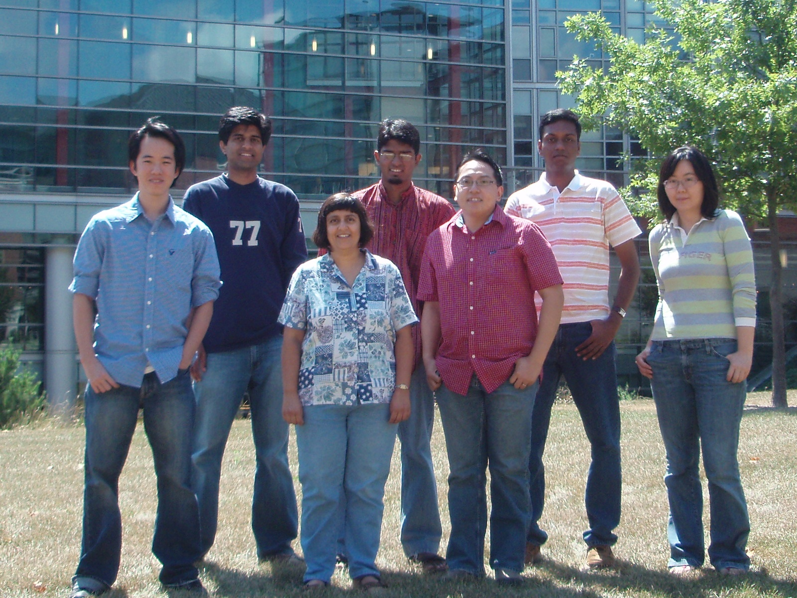

Home
Current
Matured

Directed by: Sarita V. Adve
Department of Computer Science
University of Illinois at Urbana-Champaign
Sarita V. Adve's group
conducts research in computer architecture. We also collaborate with
faculty and students in operating systems, networking, mobile computing,
and signal processing.
The field of computer architecture is currently undergoing several disruptive changes. First, power consumption has already become a major design constraint. Second, in the future, increasing power densities and nanoscale technologies will make the design of reliable systems a challenge. Third, new workloads for systems ranging from handheld devices to high-end data centers continue to demand performance beyond the capability of current superscalar processors. The focus of our group is on power- and reliability-aware architectures and systems. We work on systems ranging from mobile devices running emerging multimedia applications to high-end data centers running commercial transaction processing workloads. Our current projects are:
RAMP: Reliability-Aware MicroProcessors for
hard and soft errors
ALP: Energy-efficient
support for All Levels of Parallelism for emerging multimedia workloads
GRACE: Global Resource
Adaptation through CoopEration for energy in mobile multimedia systems
Energy and Thermal
Management in Data Centers
Our past research contributions are in the areas of memory consistency models (co-authored the new memory model for the Java programming language), exploiting instruction-level parallelism (ILP) for memory system performance (co-authored some of the first papers on memory level parallelism), and evaluation techniques for shared-memory multiprocessors with ILP processors (developed the widely used RSIM architecture simulator).